학생 명단 (번호 · 이름) 교사용
한 줄에 한 명씩 번호 이름을 적어 주세요. 엑셀에서 번호 · 이름 두 칸을 복사해 붙여 넣어도 됩니다. 학생이 방안지에 번호만 써도 결과표 · 인증서 · 순위 · 포트폴리오에 이름이 나옵니다. 명단은 이 브라우저에만 저장됩니다.
복합기로 학급 필사지를 한 번에 스캔한 PDF(또는 사진 여러 장)를 넣으면 쪽마다 채점합니다. 스캔 채점용 방안지는 학생이 번호 칸에 쓴 번호를 읽어 번호순으로 정리하고, QR로 회차 날짜를 읽습니다. 번호를 못 읽은 장은 표에서 고쳐 주세요.
무료 AI 키의 분당 호출 제한 때문에 한 장마다 몇 초씩 쉬어 가며 채점합니다(30장 약 4~5분). 막히면 잠시 기다렸다가 자동으로 다시 시도합니다.
| 번호 | 필사지 | 점수 | 단계 | 정확성 | 지난번 대비 | 처방 한 줄 | |
|---|---|---|---|---|---|---|---|
| 아직 채점한 필사지가 없습니다. | |||||||
[자세히]를 누르면 채점·인증 화면에서 그 학생의 진단표를 열고 인증서를 따로 만들 수 있습니다. 인증서 ZIP은 번호별 파일(예: 07번_인증서.png)이라 학급 게시판이나 클래스룸에서 학생별로 나눠 주기 쉬워요. 사진은 채점할 때만 AI(Google Gemini)로 보내고 앱에는 보관하지 않으며, 번호별 점수만 이 브라우저에 남습니다.
일괄 채점이 끝나면 학생별 기록(날짜 · 점수 · 정확성 · 총평 · 7대 지표)이 이 브라우저에 자동으로 쌓이고, 백업 파일(JSON)도 함께 내려받아집니다. 같은 날짜를 다시 채점하면 그 날짜 기록만 바뀝니다.
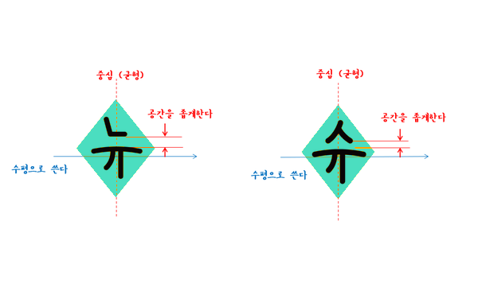
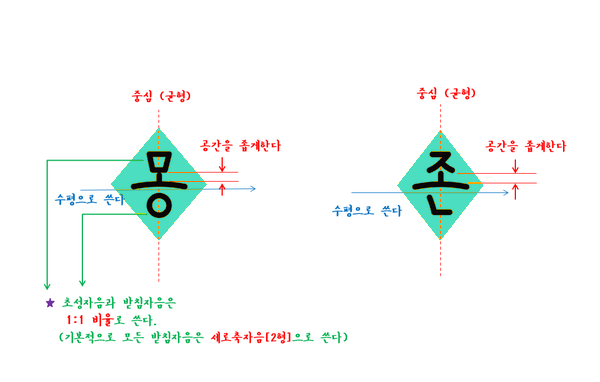
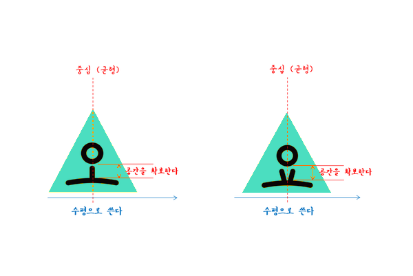
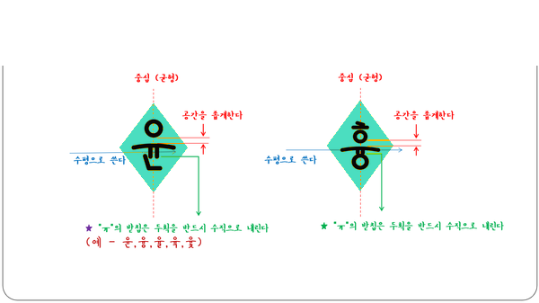
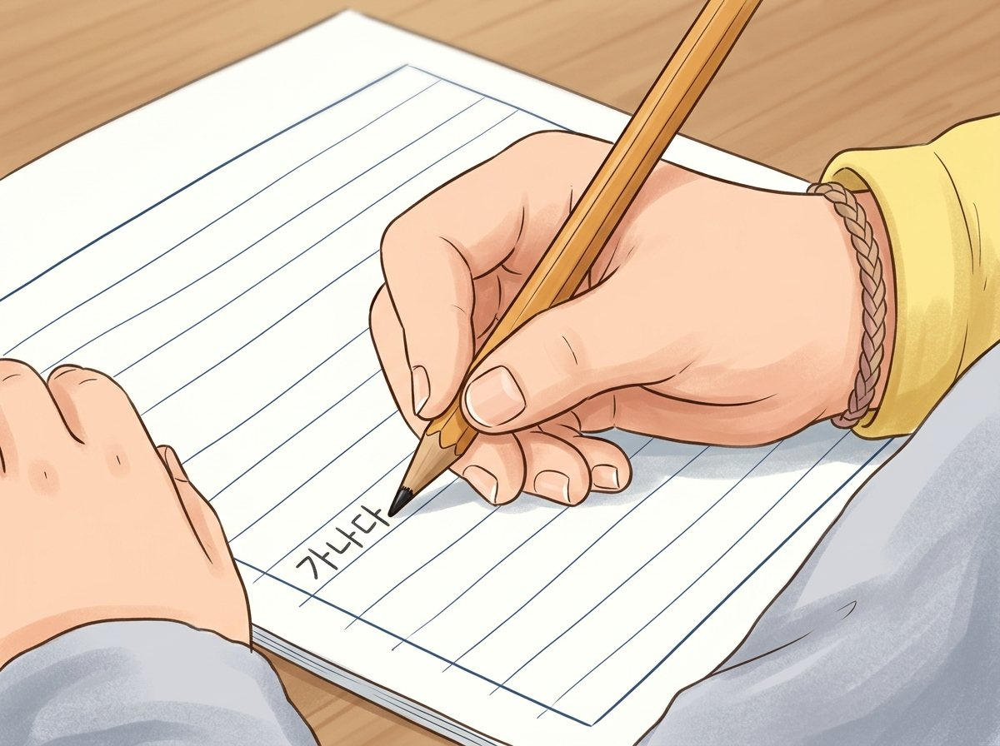
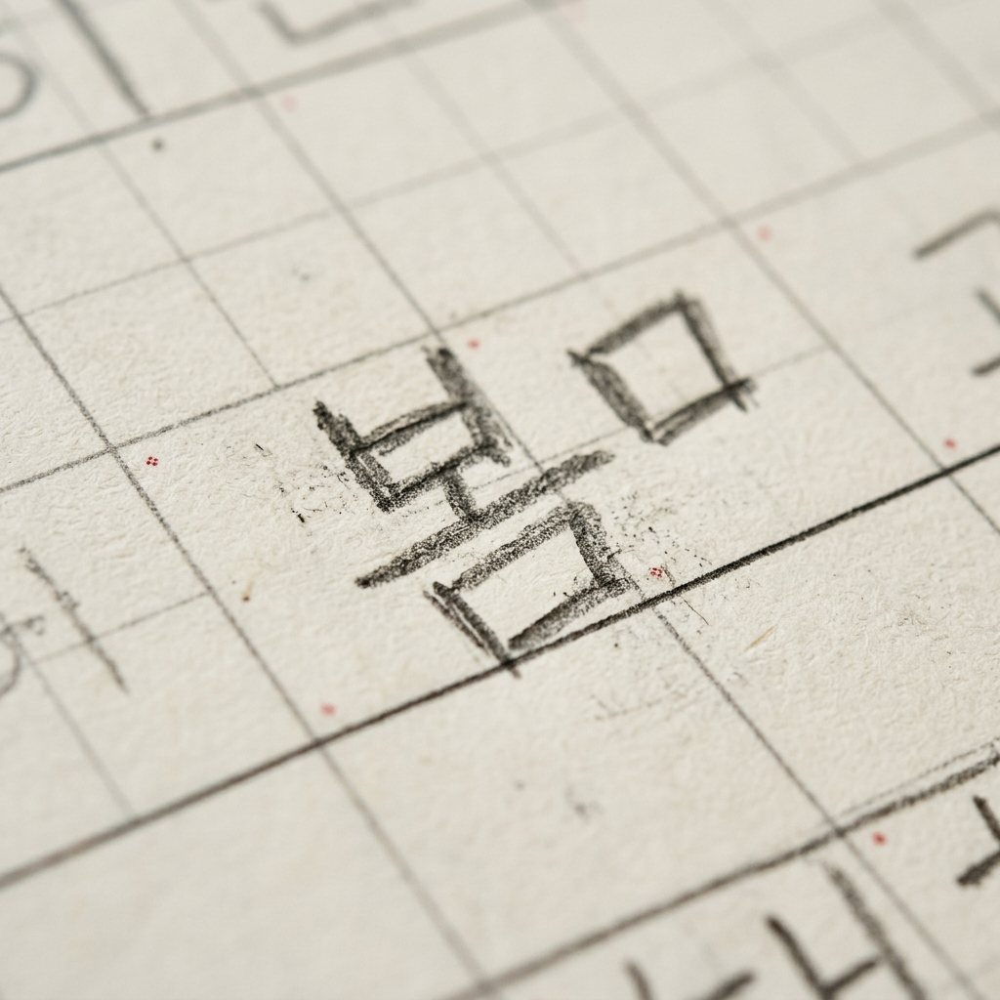
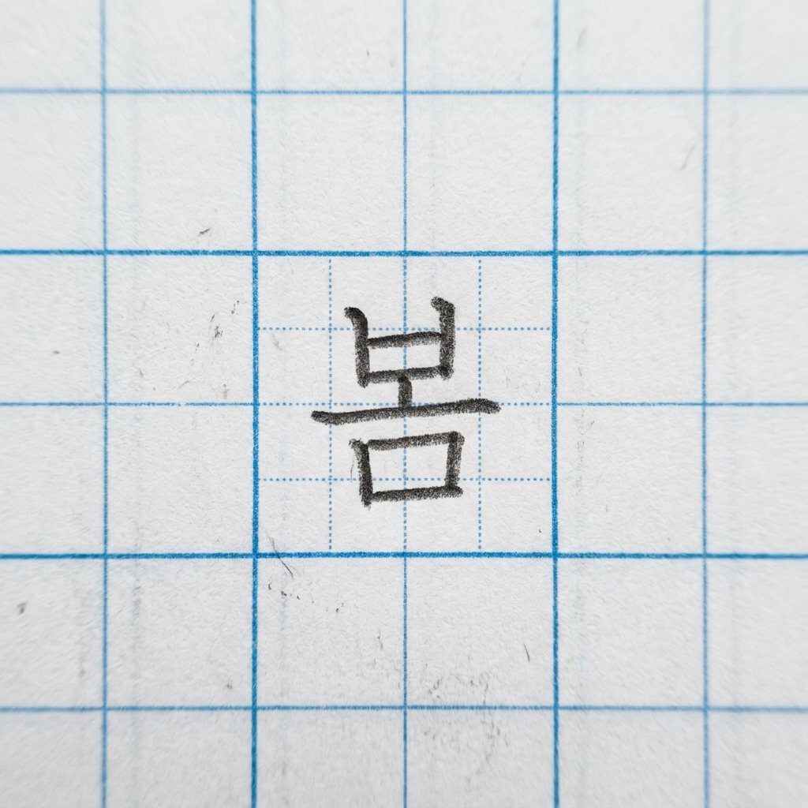
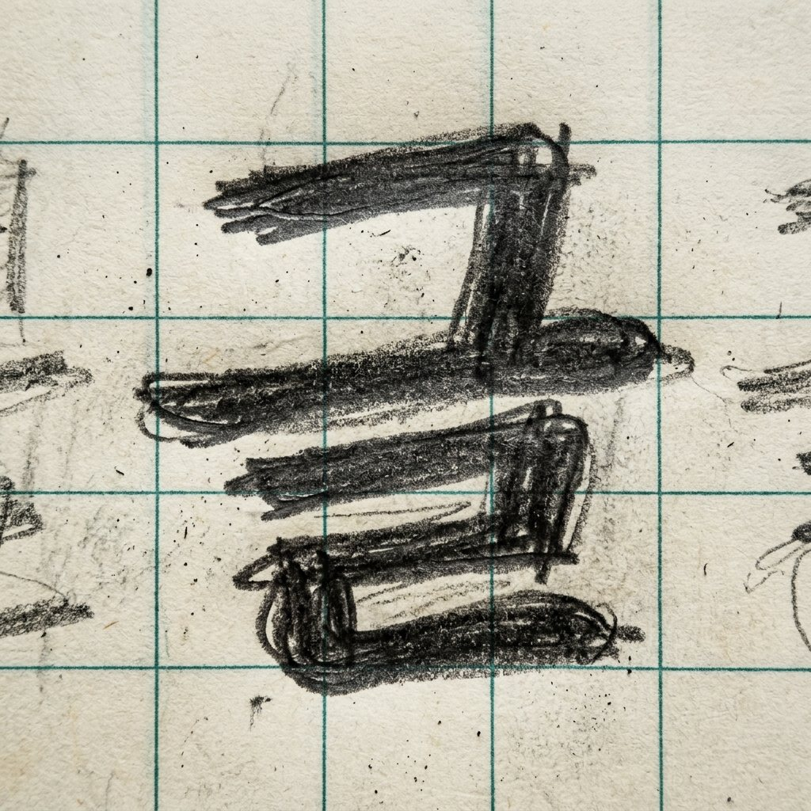
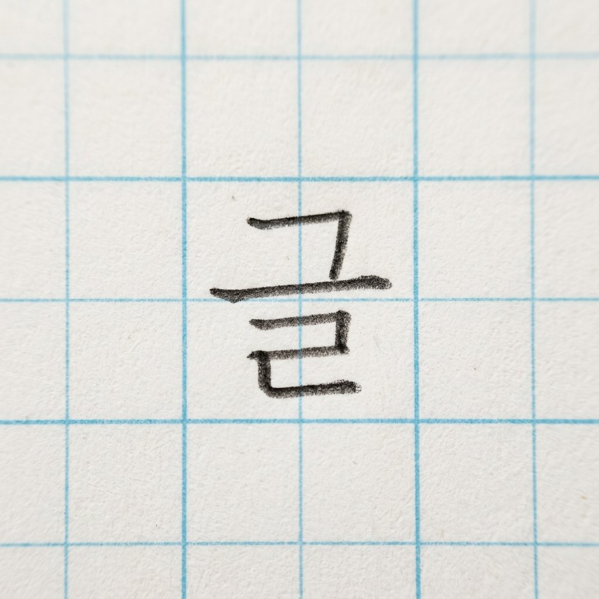
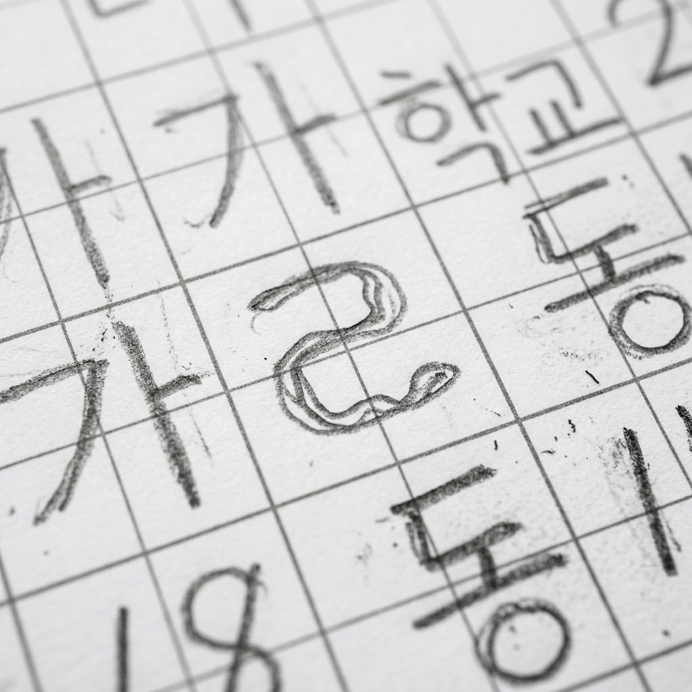
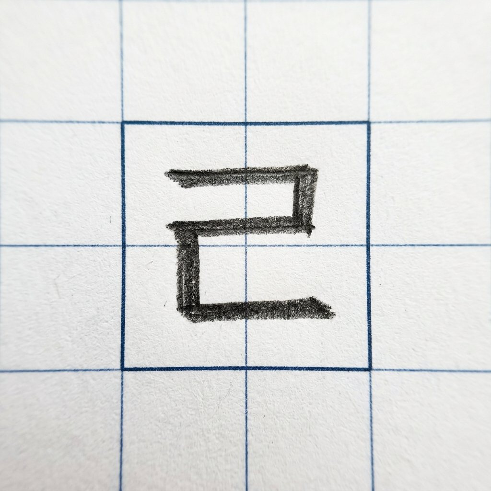
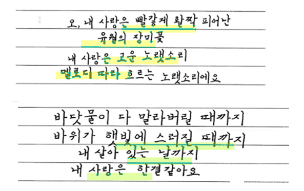
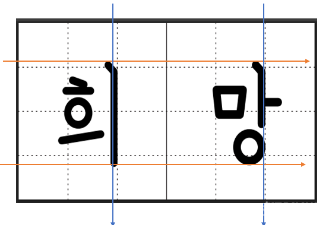
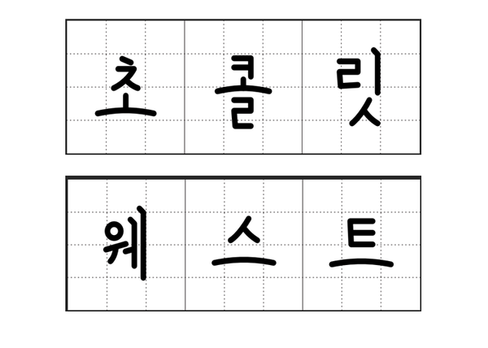
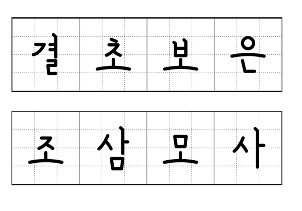
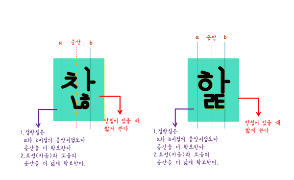
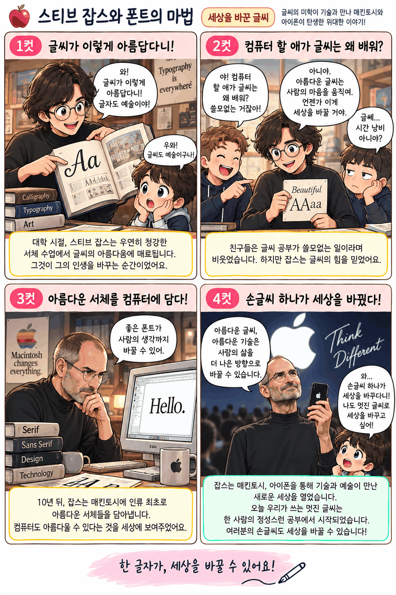
무료 Google Gemini 키를 넣고 저장하면 바로 채점할 수 있어요. 키는 이 브라우저에만 저장돼요.
· 버전: v3.1 (휴대폰·태블릿·노트북·크롬북 지원, 홈 화면에 설치 가능)
· 채점 기준: 기준선, 자모 짜임새, 크기 일관성, 받침 균형, 정렬과 자간, 가독성
· 점수와 단계: 6개 지표를 1~5단계로 진단해 점수로 바꿉니다(평균 1단계 20점 ~ 5단계 100점, 크기·기준선·자간은 조금 더 무겁게). 끝까지 도전(0~19) · 첫걸음(20~39) · 자라는 글씨(40~59) · 바른 글씨(60~79) · 고운 글씨(80~89, 모든 지표 3단계 이상) · 명필(90~100, 모든 지표 4단계 이상). 오탈자는 1자당 2점, 최대 6점만 깎습니다.
· 다음 한 걸음: 가장 낮은 지표 하나(같으면 기초 지표부터)를 골라 처방과 "올리면 몇 점"을 보여 줍니다. 일괄 채점에서는 같은 처방이 필요한 학생끼리 묶어 원포인트 지도에 쓸 수 있습니다.
· 저장 위치: 앱에는 서버가 없습니다. 설정 · 순위 · 점수 기록(이름 칸에 적은 별칭 포함)은 이 브라우저 안에만 남습니다.
· 사진과 AI: 사진은 채점할 때만 선택한 AI 회사(Google Gemini 등)로 전송되고, 앱은 사진을 보관하지 않습니다. 무료 Gemini 키는 Google이 입력 내용을 서비스 개선에 쓸 수 있으므로, 학교에서 꾸준히 쓸 때는 결제를 등록한 키를 권장합니다. 얼굴 · 이름 없이 방안지만 찍고, 이름 대신 번호를 써 주세요.